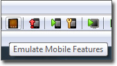
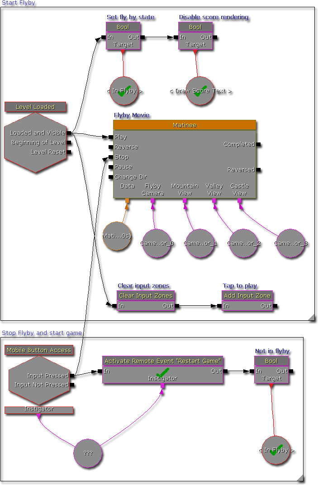
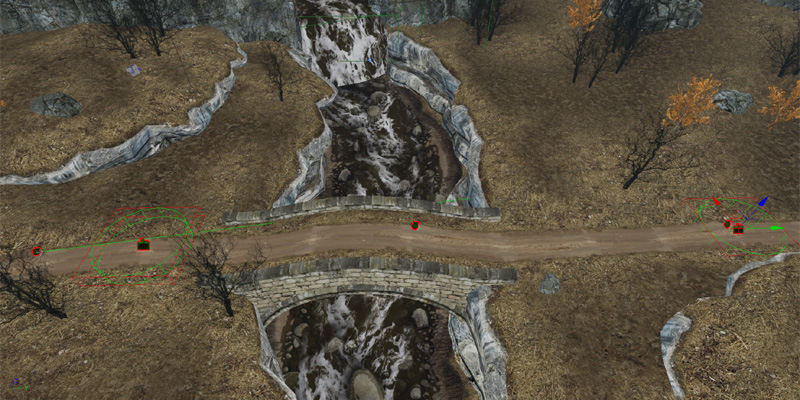
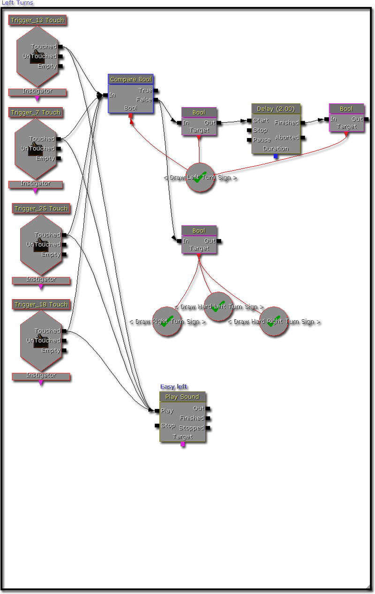
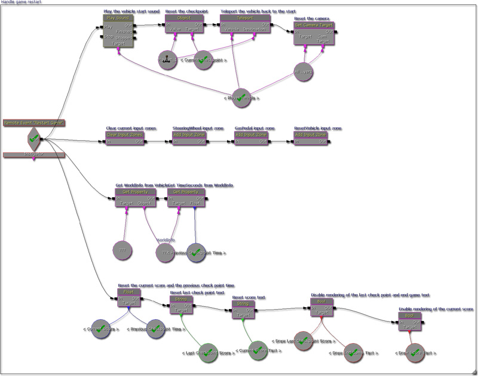
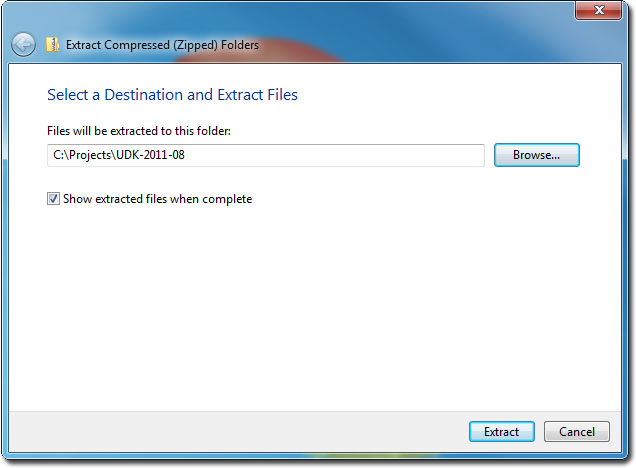
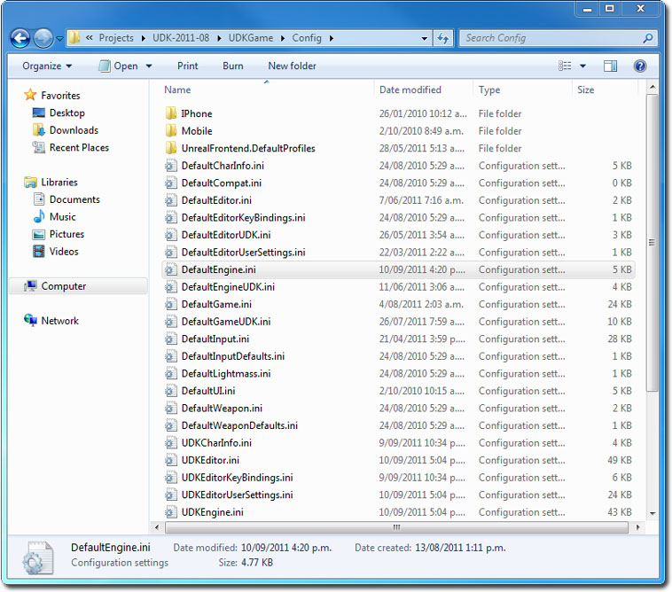
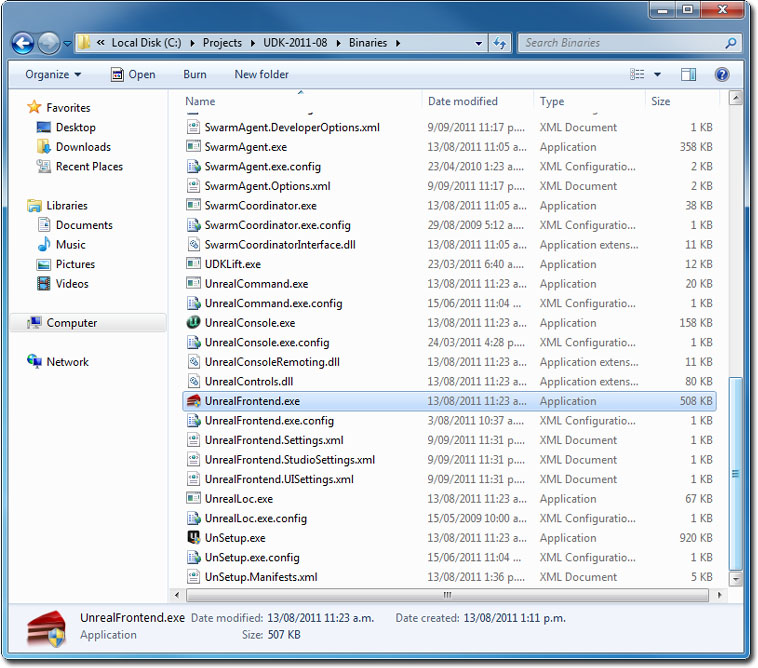
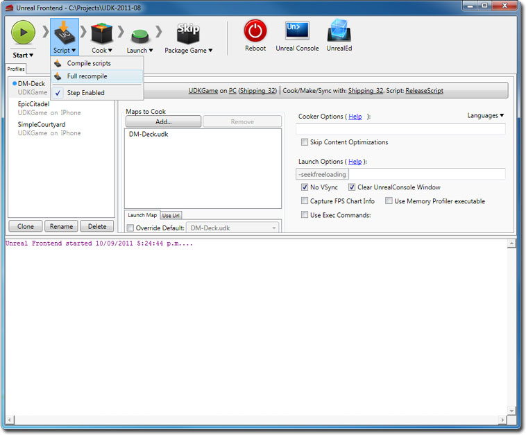
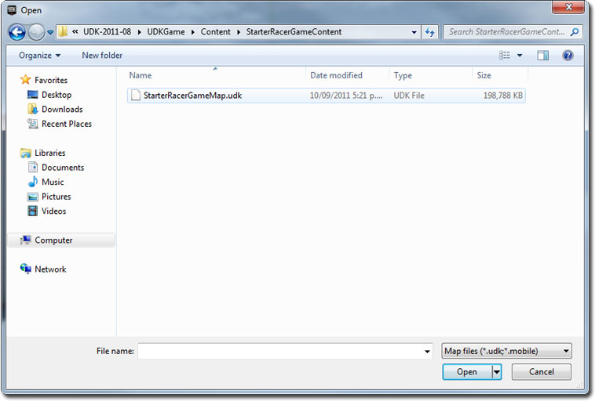

UDN
Search public documentation:
DevelopmentKitGemsRacerStarterKitCH
English Translation
日本語訳
한국어
Interested in the Unreal Engine?
Visit the Unreal Technology site.
Looking for jobs and company info?
Check out the Epic games site.
Questions about support via UDN?
Contact the UDN Staff
日本語訳
한국어
Interested in the Unreal Engine?
Visit the Unreal Technology site.
Looking for jobs and company info?
Check out the Epic games site.
Questions about support via UDN?
Contact the UDN Staff
赛车游戏初学者工具包
于 2011 年 7 月对 UDK 进行最后测试
概述
这个初学者工具包中有您可以用来作为开发汽车竞速游戏的入门课程的示例代码。


包含哪些内容？
- 简单的有车轮的载具 (SRG_Vehicle + SRG_VehicleCameraProperties) - 该载具是可以通过属性设计的简单载具。它们还可以使用存储在 VehicleCameraProperties 原型内的属性覆盖相机。
- 自定义 Kismet (SRG_SeqAct_ConcatenateStrings + SRG_SeqAct_VehicleTeleport) - 这里有两个自定义 Kismet 序列动作节点，一个允许 Kismet 将两个字符串连接在一起，而另一个可以将载具传送到其他 actor 的位置。
- 使用载具原型的游戏信息 (SPG_GameInfo) - 该游戏信息会为玩家创建一个载具原型并为玩家提供武器原型。在这里使用原型，因为它允许游戏设计师快速调节参数，不需要重新编译。
- 样本贴图 - 其中包括仿真赛车游戏所需的 Epic Citadel 的修改版本以及所有 Kismet 游戏逻辑规则。
代码 / Kismet 结构
相机的工作原理
在虚幻引擎 3 中相机的默认执行函数允许玩家的当前 pawn 或载具覆盖相机的位置和旋转量。在 CalcCamera 中进行这项操作，然后您会看到 SRG_Vehicle 中的执行函数。默认情况下 SRG_Vehicle 可以执行一个第三人称相机。通过使用 SRG_VehicleCameraProperties，它可以变为任何类型的第三人称相机，例如自上而下或后视图。在这个实例中，已经将相机偏移量设置为一个后视图相机。 通过首先计算潜在相机位置然后在载具和潜在相机位置之间进行追踪，我们可以确保相机不会将它自己内嵌在世界中。这是因为如果跟踪过程中击中了认为是世界中的部分的 actor（通过检查 bWorldGeometry 标记），它会调节相对这个击中位置潜在相机位置（通过使用击中法线采用了少量偏移）。如果跟踪过程中没有击中任何物体，那么使用初始的潜在相机位置。 通过查找载具位置与相机位置之间的方向对相机进行旋转。然后将它转换为相机旋转的旋转量。这样会创建始终瞄准载具的相机，不考虑相机位置和 pawn 位置。 最后，可以根据载具的相对速度在最小和最大值之间（存储在 SRG_VehicleCameraProperties 原型中）进行线性插值来控制 FOV。相对速度可以通过查找载具速度向量的大小然后用它除以载具最大速度获得。它可以处理很多其他汽车竞速游戏中的驶出效果，在驾驶的时候营造出速度的感觉。玩家如何在贴图开始时获取载具？
默认情况下，虚幻引擎 3 会为您生成要控制的 pawn。您可以通过在您继承的 GameInfo 类中覆盖名为 RestartPlayer 的函数更改这个操作。在调用 RestartPlayer 的时候，首先可以找到一个合适的 Player Start。如果无法找到合适的 Player Start，玩家不会“重新开始”。首先为玩家提供一个简单的 pawn，这样做是因为虚幻引擎 3 通常会希望玩家在驾驶载具之前一直控制一个 pawn。玩家拥有这个 pawn 后，接下来使用 SpawnDefaultVehicleFor 函数生成一个载具。在生成载具之前确保 pawn 没有发生碰撞，这样不会因为碰撞侵占问题而无法生成载具。在生成载具的时候，玩家的 pawn 会尝试驾驶最新生成的载具。 SpawnDefaultVehicleFor 会使用与 GameInfo 的 SpawnDefaultPawnFor 相似的方法，此外它会使用载具原型进行这项操作。在这个实例中使用原型的原因是为了可以在不需要重新编译源代码的情况下对载具进行修改。这意味着您可以在虚幻编辑器中对载具进行更改，然后立即开始测试这些更改。连接 Kismet 节点的工作原理
在激活这个 Kismet 节点后，它只会读取 ValueA 和 ValueB，并根据 ConcatenateWithSpace 确定是否要与空间连接。然后将结果输出到 StringResult。通过虚幻引擎 3 以及正确设置 VariableLink 自动设置这些变量。它可以通过将 PropertyName 设置为变量名称完成，其中您需要一个 Kismet 变量自动填充一个变量。它还可以换种方法使用 bWriteable 标记，其中根据 Unrealscript 值自动更新 Kismet 变量。传送载具 Kismet 节点的工作原理
激活这个 Kismet 节点后，它首先会尝试分别将 Vehicle 和 Destination 转换为 SVehicle 和 Actor。这是因为在 Kismet 自动填充这些字段的时候，会将它们填充为 Object。如果转换成功，那么会检查这个载具，确保它具有一个网格物体，并且已经将它的物理设置为 PHYS_RigidBody。这是因为需要 SetRBPosition、SetRBRotation、SetRBLinearVelocity 和 SetRBAngularVelocity 才能设置这个载具的位置、旋转量、线速度和角速度。需要所有这些是因为使用 SetLocation 和 SetRotation 对于 PhysX 仿真的 actor 不适用。游戏整体工作原理
游戏通过使用 Kismet 控制大部分游戏实际逻辑规则来进行工作。 在游戏第一次启动的时候，它将开始回放 Matinee，这个时候相机会快速掠过。在这段时间，整个屏幕将会对触摸做出反应，开始游戏。已经生成玩家的载具，但是它通常不会显示在视图中。当玩家触摸屏幕开始玩游戏的时候，将玩家的载具传送到第一个初始检查点。
地图上散布大量触发器。有两种类型的触发器。其中一种类型触发器可以触发音频和视频信息，帮助指导玩家。另一种类型的触发器可以处理检查点和积分情况。用红笔画出触发器，其中一个看起来像苹果，另一个看起来像个开关。
当玩家触摸音频视频触发器时，路标和副驾驶员会指示“向左转”、“向右转”等等。
当玩家触摸检查点触发器时，首先要进行的是设置检查点。在这里执行远程事件。这样做可以使 Kismet 保持整齐。 这个远程事件可以计算发给玩家的积分。计算会从 WorldInfo 中获取当前时间，从检查点时间中减去当前时间，除以一个常量，给出一个检查点积分，然后将这个积分添加到当前积分。在这段时间，将前面的检查点时间设置为当前时间。
这个远程事件可以计算发给玩家的积分。计算会从 WorldInfo 中获取当前时间，从检查点时间中减去当前时间，除以一个常量，给出一个检查点积分，然后将这个积分添加到当前积分。在这段时间，将前面的检查点时间设置为当前时间。
 就这样，使用 Kismet 构建简单赛车游戏的基础结构。
就这样，使用 Kismet 构建简单赛车游戏的基础结构。
游戏如何渲染屏幕上的贴图？
Kismet 使用它的 HUD 渲染功能对屏幕上的贴图进行渲染。通过使用 Kismet 全局布尔变量，可以在标志是否必须进行渲染的时候简单地启用或禁用它们。您可以在音频视频 Kismet 序列中看到它。
游戏如何处理重新开始情况？
重新开始游戏需要做四件事，这四件事通过 Remote Event（远程事件）中的四个分支表示。- 从上面开始，第一个分支会处理玩家载具的重新设置。首先，Kismet 会播放载具开始声音作为玩家反馈。下面，会将当前检查点分配给关卡中的 player start。最后，会将载具传送到当前检查点，然后再将相机目标设置给玩家载具。
- 第二个分支会处理移动设备输入区域的设置。当游戏结束时，它会删除所有控制输入区域的载具。
- 第三个分支会处理将当前检查点时间设置为玩家重新开始游戏的时间。
- 第四个分支会处理重新设置积分并清除积分文本。

游戏如何处理结束游戏的情况？
在竞赛结束时当玩家的载具触摸到一个触发器的时候，游戏会结束。Kismet 会执行下面的指令：- 将相机目标设置为关卡中的相机 actor，这样可以得到一个影响感更好的视图，您可以在需要的时候展开它播放 Matinee。
- 清除所有当前输入区域，这样玩家就无法再驾驶载具。
- 播放竞赛结束声音作为玩家反馈。
- 编写结束游戏文本，将积分填写在发送给玩家的消息中。
- 启用结束游戏文本渲染序列。
- 禁用游戏中积分文本渲染序列。
- 添加一个重新开始游戏按钮。

如何使用这个初学者工具包
- 下载 UDK。
- 安装 UDK。
- 下载这个 zip 文件。
- 将这些内容解压缩到您的 UDK 基础目录中。（ 例如 C:\Projects\UDK-2011-08\）Windows 可能会通知您可能覆盖现有文件或文件夹。在所有通知消息上点击确定。

- 使用 Notepad 打开 UDKGame\Config 中的 DefaultEngine.ini 目录。（ 例如 C:\Projects\UDK-2011-08\UDKGame\Config\DefaultEngine.ini）

- 搜索 EditPackages 。

- 添加 +EditPackages=StarterRacerGame

- 启动 Binaries 目录中的 Unreal Frontend Application（虚幻前端应用程序） 。（ 例如 C:\Projects\UDK-2011-08\Binaries\UnrealFrontend.exe）

- 点击 Script ，然后是 Full Recompile（完全重新编译） 。

- 您应该会看到 StarterRacerGame 软件包最后一个被编译。

- 点击 UnrealEd 打开虚幻编辑器。

- 点击 Open（打开） 按钮，然后打开 StarterRacerMap.udk 。


- 点击 Play In Editor（在编辑器中播放） 按钮播放赛车游戏初学者工具包。

下载

- 下载该初学者工具包的代码和内容。

{kind=link}